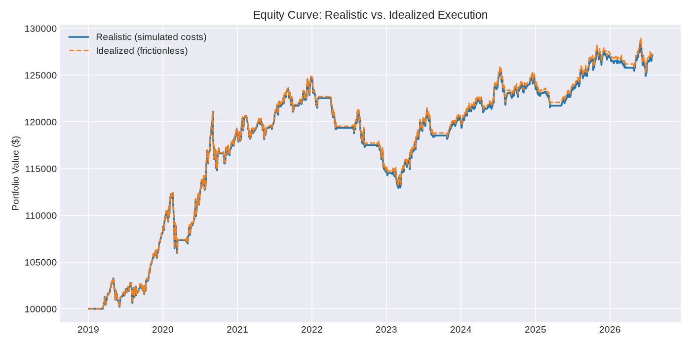
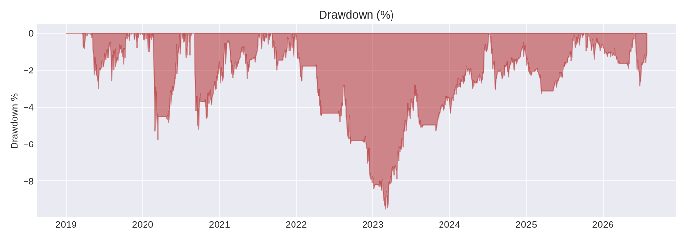
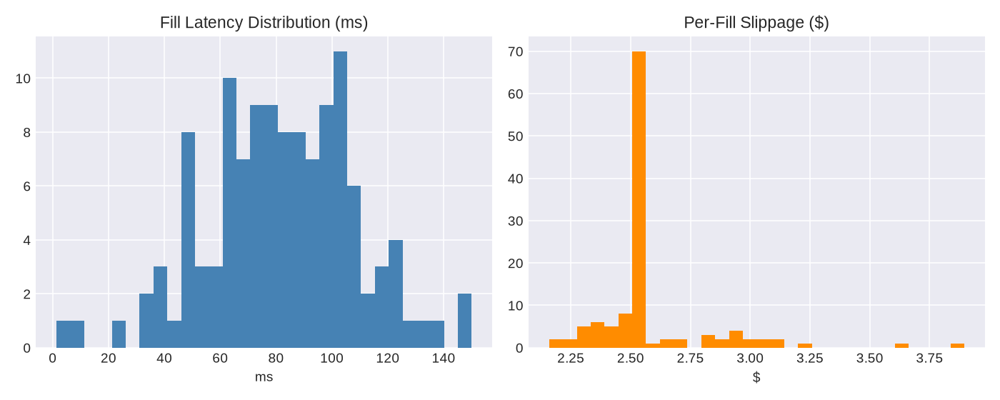
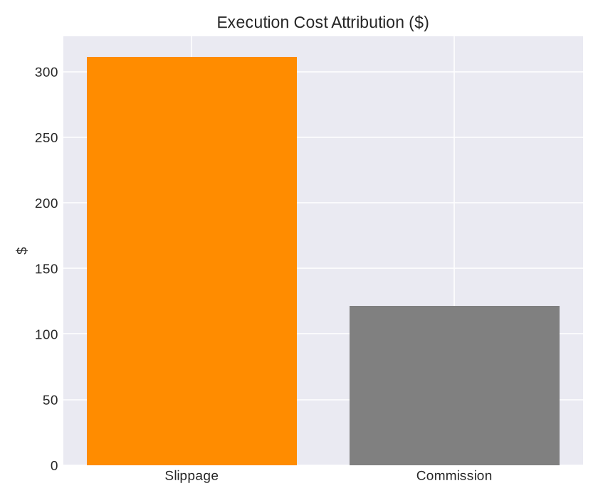

| Initial Capital | 100000 |
| Final Equity Realistic | 127,134.5790 |
| Final Equity Idealized | 127,556.8430 |
| Realistic Pnl | 27,134.5790 |
| Idealized Pnl | 27,556.8430 |
| Execution Cost Drag | 422.2640 |
| Execution Cost Drag Pct Of Idealized | 0.0153 |
| Total Return Pct | 0.2713 |
| Annualized Return | 0.0323 |
| Sharpe Ratio | 0.7426 |
| Sortino Ratio | 0.8102 |
| Max Drawdown | -0.0950 |
| Turnover | 10.2378 |
| Num Fills | 118 |
| Total Slippage Dollars | 303.9057 |
| Total Commission Dollars | 118.3584 |
| Avg Latency Ms | 82.0286 |
| Num Partial Fills | 0 |



